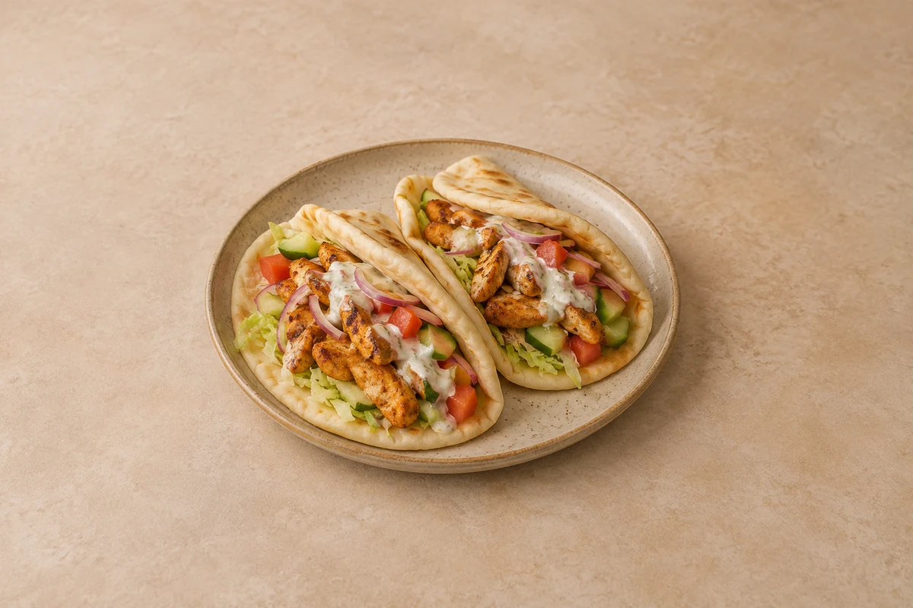

Lunches
Chicken Shawarma Flatbreads
Warm flatbreads with spiced chicken breast, crunchy salad and a lemony garlic yoghurt sauce. Serves 2.
Time to allow: 30 min total
Ingredient quantities update automatically

Ingredients
Chicken and flatbreads
Salad
Garlic yoghurt
Method
Coat the chicken
Mix the yoghurt, olive oil, cumin, paprika, coriander, cinnamon, grated garlic and lemon juice for the chicken. Season lightly, add the chicken strips and coat well. Leave for 10 minutes while you prepare the salad.Prepare the salad
Dice the cucumber and tomato, thinly slice the red onion and shred the lettuce. Keep the salad separate from the raw chicken.Mix the garlic yoghurt
Mix the sauce yoghurt, grated garlic and lemon juice in a small bowl. Season to taste.Cook the chicken
Heat a large non-stick frying pan over a medium-high heat. Add the coated chicken in a single layer and cook for 8–10 minutes, turning regularly, until browned and cooked through. Cook in batches if the pan is crowded. Rest for 3 minutes.Warm the flatbreads
Warm the flatbreads in a dry frying pan or according to the packet instructions until soft and flexible.Fill and serve
Spread the garlic yoghurt over the flatbreads. Add the lettuce, cucumber, tomato, onion and cooked chicken. Fold loosely and serve straight away.
Tips & leftovers
Storage & leftovers
Keep cooked chicken, garlic yoghurt and salad in separate covered containers in the fridge. Use within 48 hours of cooking the chicken. Fill the flatbreads just before eating so they stay soft rather than soggy.
Freezing
Freeze cooled cooked chicken in labelled portions for up to 2 months for best quality, and freeze flatbreads separately if their packet allows. Make the salad and garlic yoghurt fresh; they do not retain their texture well after freezing.
Reheating
Reheat the chicken in a covered frying pan with a splash of water, turning until steaming hot throughout. Warm the bread separately and add cold sauce and salad after heating. Only reheat the chicken once.
Substitutions
Use pitta breads or tortilla wraps instead of flatbreads. Plain yoghurt works for the marinade and sauce. Swap the salad vegetables for shredded cabbage and grated carrot. Keep chicken breast as the meat.
Keeping leftovers safe
Cool cooked leftovers in small portions and refrigerate within 2 hours. Keep the fridge at 0–5°C and the freezer around −18°C. Freeze suitable leftovers promptly. Defrost fully in the fridge and use within 24 hours. Reheat only once, until steaming hot all the way through. Follow any shorter use-by or opened-pack instructions; using older cooked ingredients does not restart their storage time.
Food-safety guidance: Food Standards Agency: chilling and freezing · reheating leftovers.